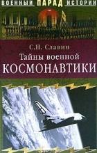

Немного о тайнах военной космонавтики

По материалам книги Святослава Николаевича Славина
" Тайны военной космонавтики. "
А также из других источников Интернет
Уважаемый Читатель - после ознакомления с Книгой
рекомендую Вам заказать ее бумажное издание.
Книга посвящена истории развития отечественной и зарубежной военной космонавтики. Автор в популярной форме рассказывает о малоизвестных сторонах освоения космоса. Читатель узнает о первых проектах космических двигателей и кораблей, о многочисленных трудностях, которые предстояло преодолеть человечеству на пути в неведомое; познакомится с первыми, порой фантастическими доктринами освоения и использования околоземного и космического пространства, с устройством первых космических пилотируемых и непилотируемых кораблей и многим другим. Книга адресована всем, кто интересуется освоением космоса, ракетостроением и военной техникой.